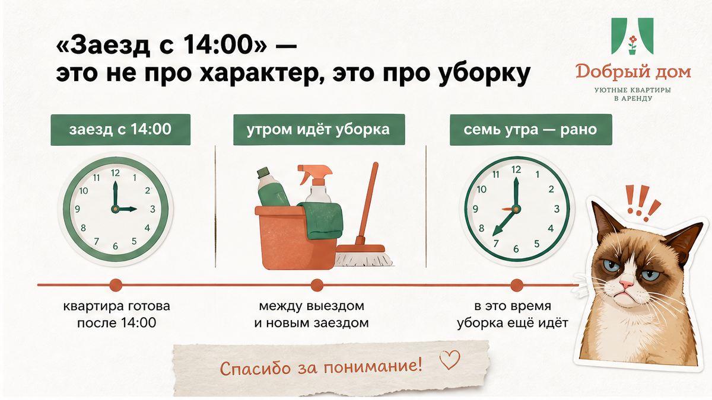
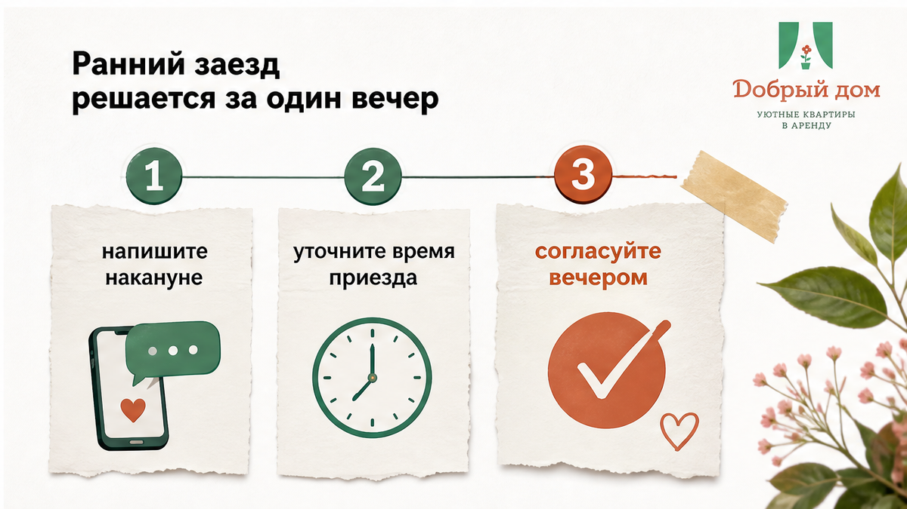
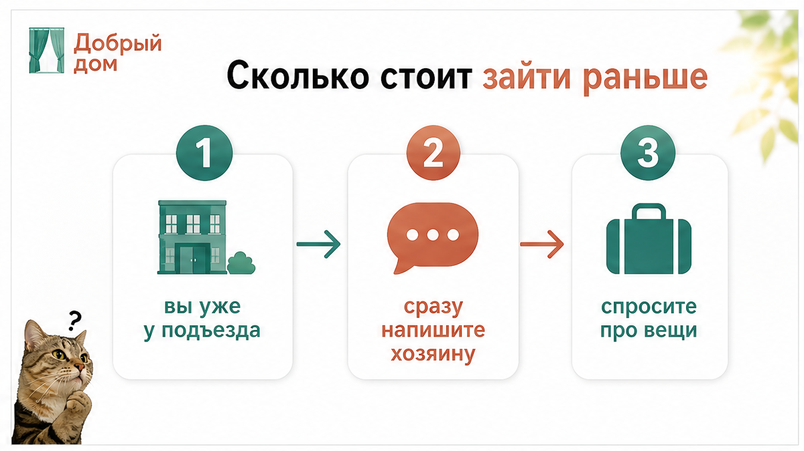
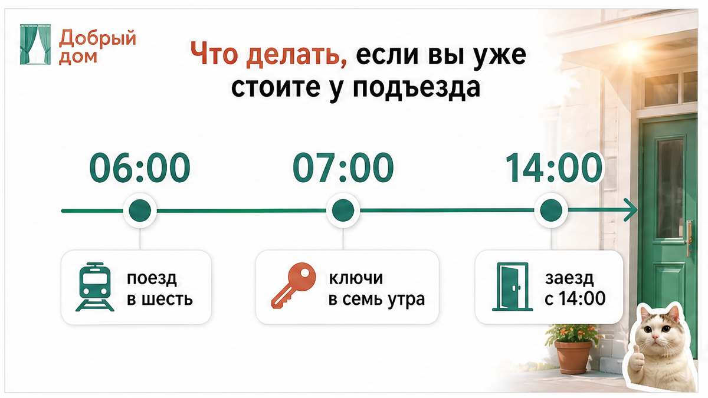
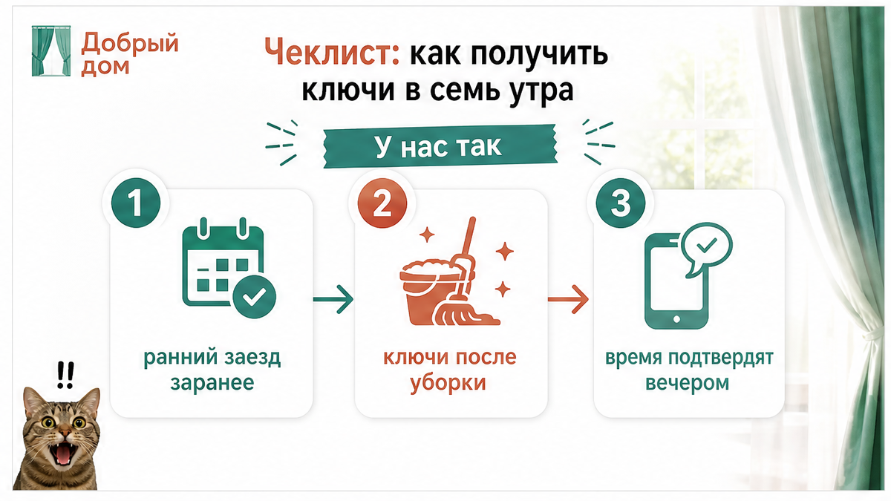
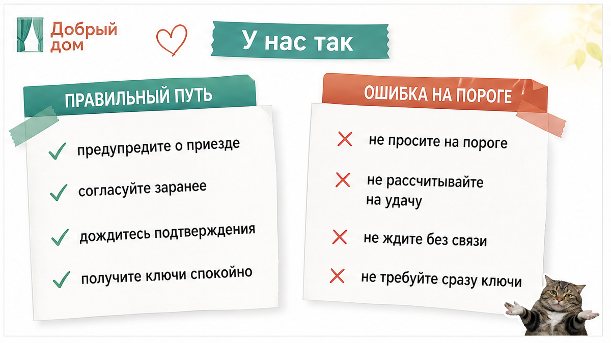

Семь утра. Поезд пришёл в 6:40, такси доехало за двадцать минут. У подъезда стоят двое взрослых, ребёнок, три сумки и коляска. Звонок: «Мы уже здесь, можно зайти?»
А в квартире ещё спят люди. У них выезд в двенадцать.
Дальше всё решает одна вещь. Не наша вредность и не ваша настойчивость. А то, сказали вы про семь утра вечером — или уже на пороге.

Выезд в двенадцать, заезд в два. Между ними два часа, и они не про то, чтобы горничная попила чай.
За эти два часа надо снять и заменить постель, вымыть санузел, протереть кухню, перемыть посуду, вынести мусор, пройти полы, проверить полотенца, вытащить из-под кровати забытый детский носок и найти на подоконнике зарядку от чужого телефона. Потом позвонить прошлым гостям: у вас там зарядка, куда её везти.
Одна квартира — это час-полтора спокойной работы. А в этот день их может быть три, и все в разных районах.
Так что в семь утра квартира — это не «почти готово». Это либо ещё занято, либо ещё не убрано. Третьего в семь утра не бывает. Про коды и доступ — в материале про бесконтактное заселение.
Мы правда понимаем, откуда это. Ночь в плацкарте, ребёнок засыпает на руках, на улице минус, и очень хочется просто лечь. Логика простая: пустите нас куда-нибудь, мы никого не тронем.
Но вы не чемодан. Вам нужен душ, нужна кровать, нужно поставить чайник и выдохнуть. Сидеть в углу на сумках, пока рядом моют пол, — это не отдых, это наказание.
И людям, которые ещё не выехали, тоже нужно проснуться и собраться без чужих людей в коридоре.
Поэтому ранний заезд — это не «пустить пораньше». Это освободить квартиру раньше. А такое делается заранее.

Самое дешёвое время для этого разговора — накануне. Ещё лучше — в момент брони.
Напишите нам сразу: дата, номер брони, во сколько поезд или самолёт, сколько человек, и что именно нужно — попасть в квартиру в семь или просто оставить сумки. Если бронируете с ценой «от» в объявлении — уточните и ранний заезд отдельно.
Дальше мы смотрим на одну строчку: свободна ли квартира в предыдущую ночь.
Если свободна — вопрос закрыт. Уборка делается вечером, ключи отдаём в семь, и вы спокойно ложитесь спать.
Если занята до двенадцати — мы говорим об этом честно и сразу. Не «приезжайте, на месте посмотрим», а прямо: в семь не получится, вот варианты.
Самый надёжный способ гарантировать себе семь утра — забронировать ночь до. Тогда квартира ваша с вечера, и никто никуда не спешит: ни горничная, ни вы, ни ребёнок, который уснул в лифте.

Отдельной «кнопки ранний заезд» в прайсе нет. Есть три варианта, и мы называем их до оплаты.
Бесплатно — если квартира уже свободна и уборка сделана вечером. Платно — если нужно сдвинуть горничную или забронировать ночь до. И «никак» — если предыдущие гости не выехали.
Главное — не «сколько стоит в среднем по рынку», а что именно согласовали в переписке. «Думаю, получится» — не цена. Про доплаты до оплаты — отдельно: скрытые доплаты при аренде.

Бывает и так. Планы поменялись, билеты переписали, приехали раньше.
Тогда — звоните, а не пишите. В 6:55 сообщение в чате может подождать до восьми, а звонок — нет.
Спросите ровно две вещи: можно ли зайти раньше и можно ли занести сумки. Ответ будет разный в зависимости от того, кто ночевал в квартире, но он будет быстрый.
Если раньше никак — это не катастрофа. Три часа в городе переживаются нормально: камера хранения на вокзале, кофейня с завтраками, торговый центр, который открывается раньше остальных. Неприятно, но переживаемо.
Хуже другое — приехать в семь, никого не предупредить и три часа стоять в подъезде, надеясь, что сейчас всё разрулится само.

Если хотите, чтобы за вас это проверили и сразу ответили по конкретным датам — напишите нам в Telegram. Быстрее, чем гадать.

Мы спрашиваем время приезда сами, до того как вы про него вспомните. Потому что «приедем утром» и «приедем в 6:40» — это два разных дня для горничной.
Ранний заезд подтверждаем текстом. Если написали «в семь» — значит в семь ключи будут у вас, а не «постараемся».
Если не можем — говорим сразу, в тот же вечер. Не тянем до утра и не отправляем вас гулять по морозу с формулировкой «уточняем».
И если квартира освободилась раньше, а вы всё ещё в такси — сообщаем сами. Заходите, у нас готово.
Написать нам: MAX или Telegram. Позвонить: +7 993 574-83-22. Забронировать и сразу написать про ранний заезд: добрыйдом-72.рф.
Семь утра — нормальное время для заезда. Просто договариваться о нём надо вечером.